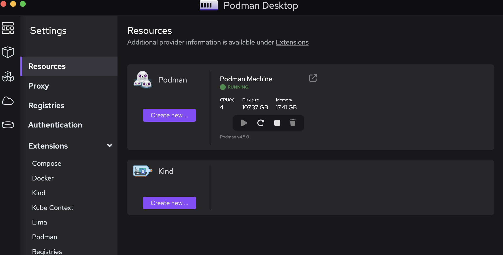

OpenShift Quickstart
Laptop
Prerequisite: Install Podman Desktop
Before proceeding, make sure you have Podman Desktop installed on your laptop. You can download and install it from the official website: (https://podman-desktop.io/)[Podman Desktop].

Git Clone
- Open your terminal.
- Navigate to the directory where you want to clone the project.
- Run the following command to clone the Git repository:
Replace
https://github.com/openlab-red/openshift-quickstart.gitwith the actual URL of the Git repository you want to clone.
Open the Project with Visual Studio Code
- Navigate to the project directory:
Replace
openshift-quickstartwith the name of the directory where you cloned the Git repository. - Open Visual Studio Code:
DevSpaces
Using DevSpaces with Devfile
OpenShift DevSpaces provides a cloud-based development environment using the configuration specified in the devfile.yaml. Follow these steps to get started:
-
Log into your OpenShift cluster and navigate to the DevSpaces dashboard.
-
Create a new workspace by importing this repository URL:
DevSpaces will automatically detect and use thedevfile.yamlat the root of the project. -
The devfile configures:
- A developer container with ZSH shell
- Default workspace pointing to the project's VS Code workspace
-
Required environment variables and configurations
-
Once the workspace starts:
- You'll have a fully configured development environment
- VS Code server will be available in your browser
-
All necessary tools and dependencies will be pre-installed
-
Start developing:
Note: The devfile inherits configurations from a parent devfile that contains base developer tooling and settings.